April Fool's day is one of my favorite holidays. Two years ago I tricked my parents that I had an awful boyfriend. Last year I didn't pull any pranks because I was swamped with school, so I wanted to try to fool my parents again this year. With all the political things happening lately, along with the fact I went home to caucus several weeks ago, I decided to trick them into thinking that I got a Bernie Sanders tattoo. My parents aren't too fond of either Bernie Sanders or tattoos.
I had to make the prank realistic, and I also had to use Facebook again since I live 1.5 hours away from my parents. I went to an actual tattoo shop, explained my prank idea, and asked them if I could pose for some photos with them. I'd never been to a tattoo shop before and was super nervous, but they thought it was funny and I got some great pictures.
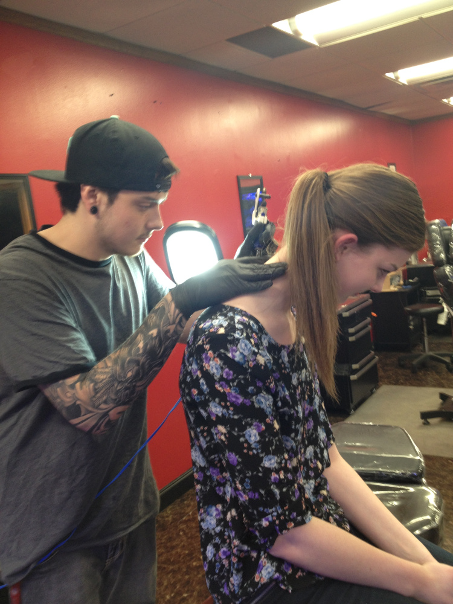Next, I posted on Reddit to ask some strangers for help tattooing a Bernie Sanders tattoo to the back of my neck. I ended up with several realistic tattoos to choose from. This was the best one.
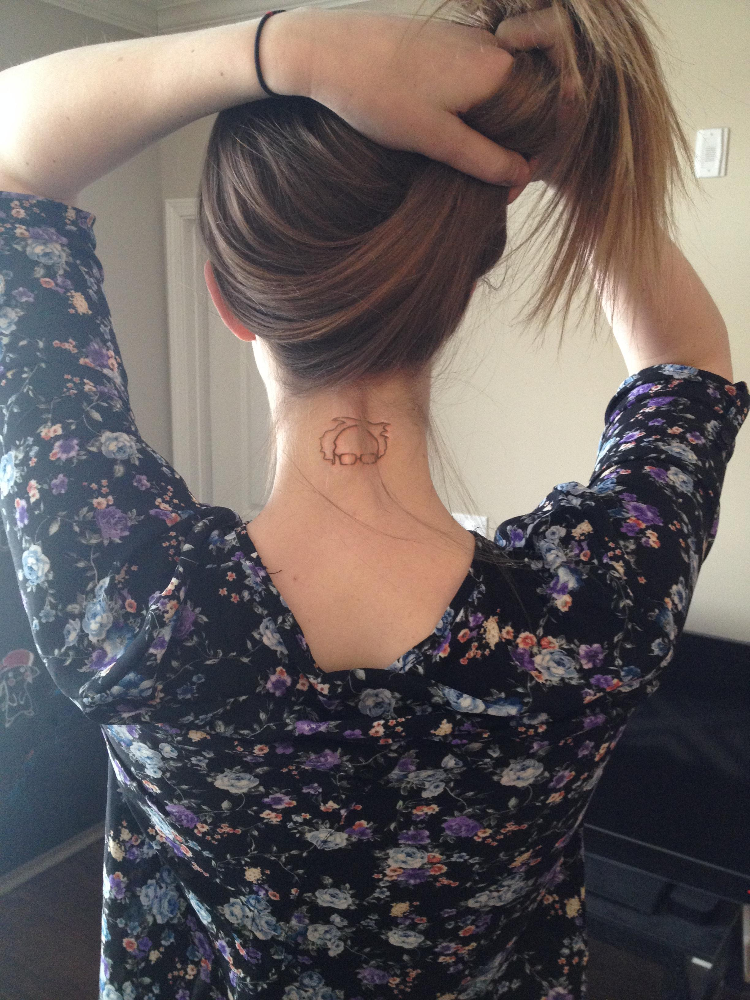On a side note, one of the other pictures from the Reddit thread was posted in a public Imgur album. People actually thought it real and left rude and lewd comments. Here's the link to the album.
I knew that if I just posted the pictures on actual April Fool's day, my parents would immediately know it was a prank. I posted the pictures on Sunday (5 days ahead of time) instead, and set the post so that only I could see it. Then I made a friend list on Facebook and set the post's privacy settings to that only my friends on that list could see it. One by one, I would add a friend to the list so that they could see the post, and then message them explaining the prank and asking them to like or comment on the post. Almost everyone was up for it and I got some pretty good comments. I ignored most of the negative comments as part of the act.
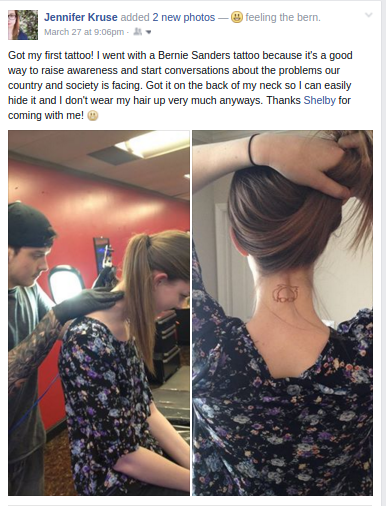 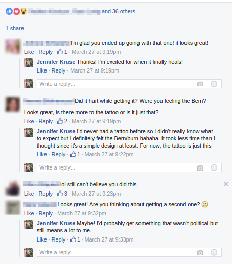 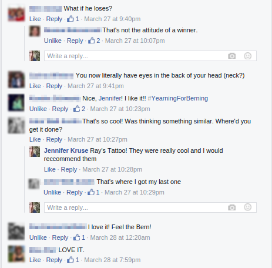 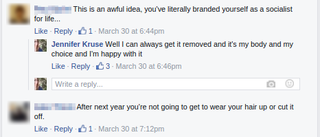The night before April Fool's day, after I knew my parents would be asleep, I had asked a family member to comment on the post and tag my mom, so that she would see it in the morning when she first checked Facebook. I was hoping to catch her off guard.
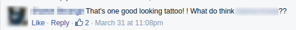I woke up to a text from my mom asking if it was a prank. I played dumb (referring to the Tesla reservation the night before), to try to convince her it was real.
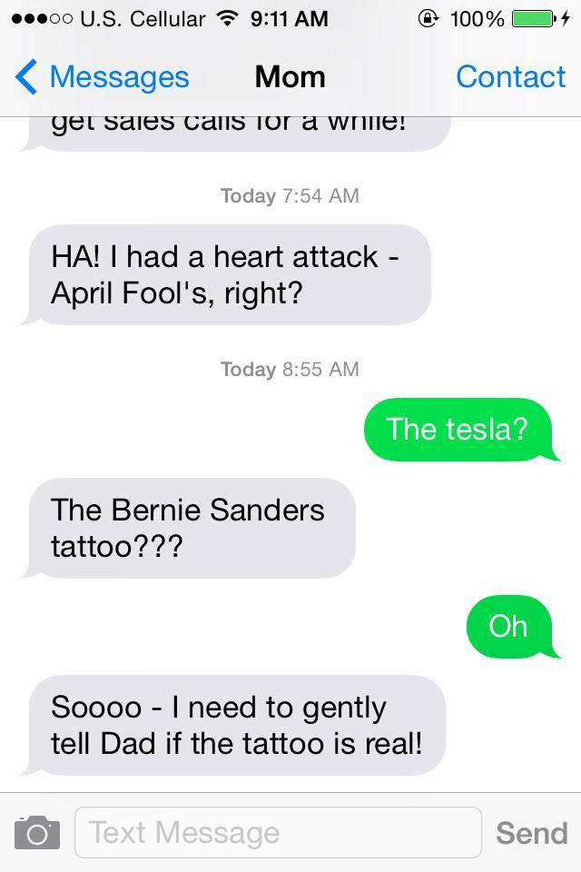 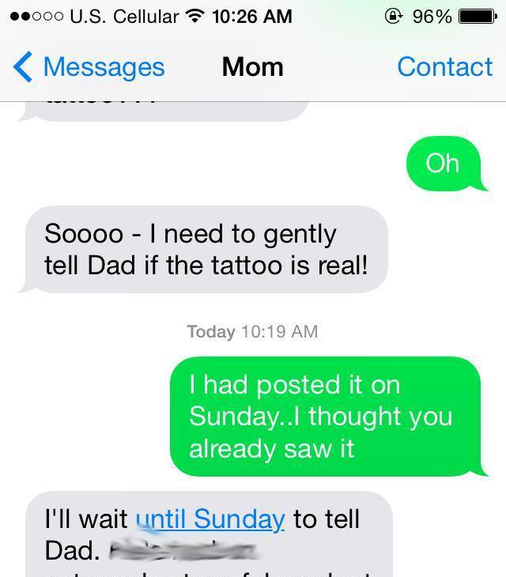 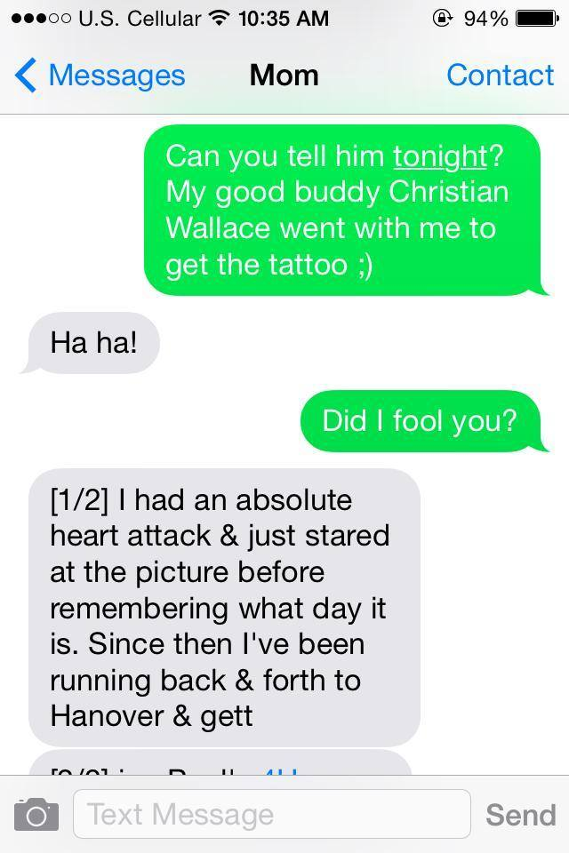Unfortunately my dad didn't fall for the prank this year. He was on guard since there was a prank at his job during the day, but he did say he was still recovering from Christian Wallace from two years ago.
Just for fun, I opened up the Facebook post so that all my friends could see it. My roommate got a message asking if it was real, and some additional people liked the post. Someone commented to ask if it was a prank, but I pointed out that I had posted this on Sunday. Even people at work were asking me if it was real.
Later that night, I made a post saying it was a prank, but the next day, my grandma let everyone know she can't be fooled.
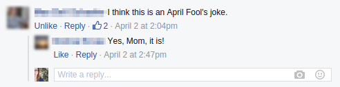Questions? Comments? Don't hesitate to contact me!